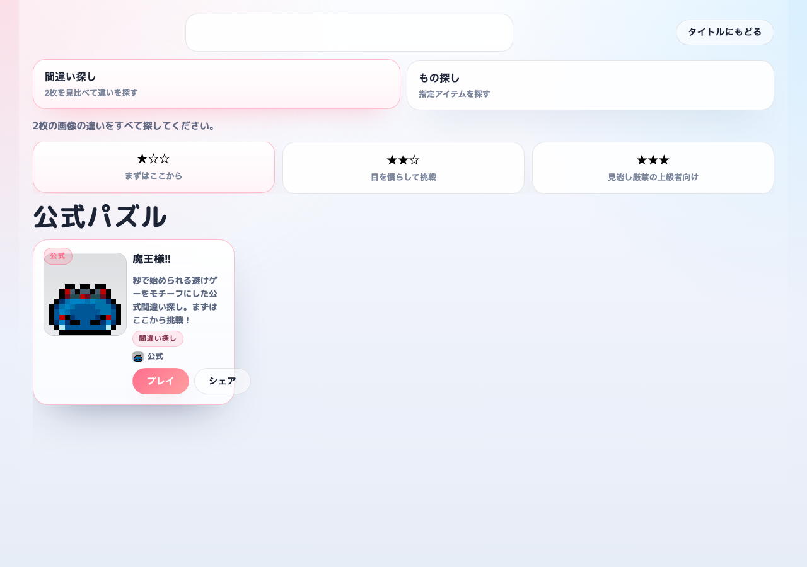
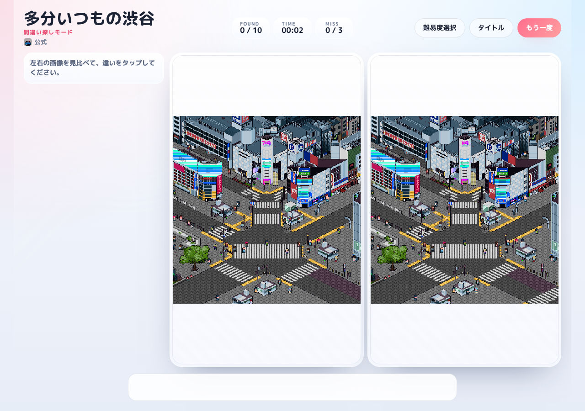
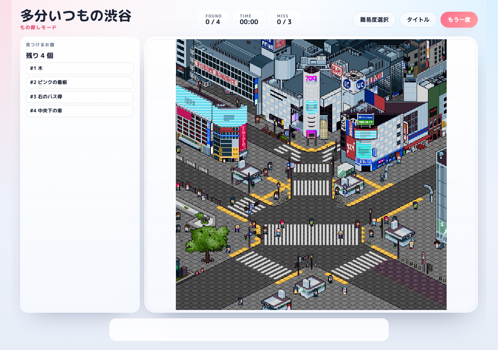

見た目で理解しやすい
遊び方を長く読まなくてもルールが伝わります。
overview
PiXFiNDは、ドット絵に特化したブラウザ向けの間違い探しゲームです。
説明が長くなりがちなゲーム紹介を1ページで完結させ、何のゲームか、どう遊ぶか、誰向けかをすぐ伝えます。
配信、イベント、短時間プレイに向く構成です。
features
scenes
how to use
samples
ゲーム全体の印象がすぐ伝わる OGP 画像です。

難易度と問題を見比べながら、今やりたい1問を選べる実画面です。

実際に見比べながら遊ぶ流れが、そのまま伝わる実プレイ画面です。

もう一つの遊び方である、もの探しモードの実プレイ画面です。
faq
遊べます。
ブラウザでそのまま遊べます。
ドット絵が好きな人や、見比べゲームを手軽に遊びたい人向けです。
links